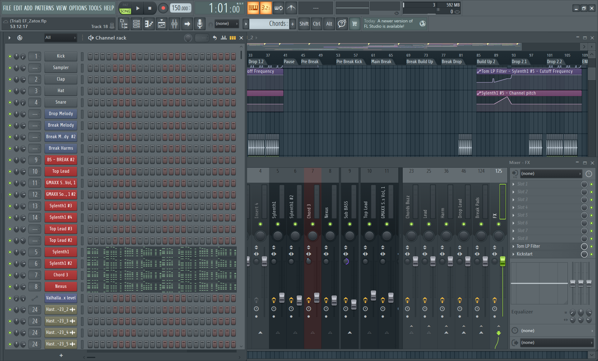
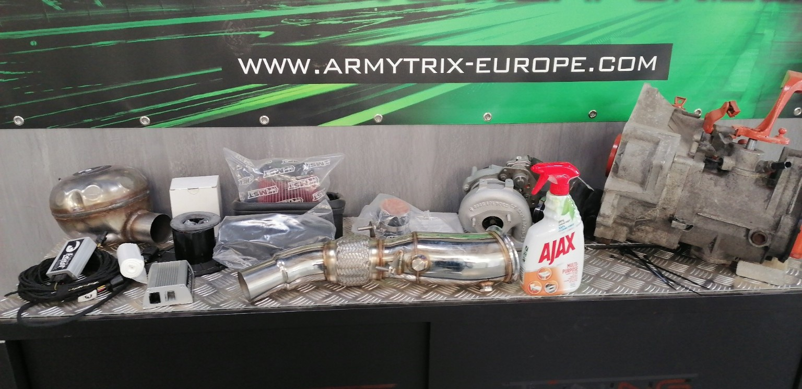

Hobby's & Interesses
Creativiteit, techniek en ontdekking
Mijn interesses draaien vaak rond dezelfde onderwerpen: creativiteit, technologie en nieuwe dingen ontdekken. Of ik nu een game speel, muziek produceer, aan een auto werk of een softwareproject ontwikkel, ik vind het interessant om te begrijpen hoe iets werkt en wat ik er zelf mee kan doen.
Mijn hobby's zijn voor mij niet alleen manieren om te ontspannen. Ze bieden ook kansen om nieuwe vaardigheden te leren, ideeën uit te proberen en technische problemen op te lossen.
Gaming
Gaming is al jarenlang een belangrijke hobby voor mij. Ik speel verschillende genres, waaronder racegames, rollenspellen, strategiespellen en multiplayergames. Wat mij vooral aanspreekt, is de combinatie van uitdaging, vrijheid en interactie. Sommige games draaien rond samenwerken, terwijl andere mij de mogelijkheid geven om een wereld op mijn eigen tempo te ontdekken.
In racegames besteed ik bijvoorbeeld graag tijd aan het aanpassen van auto's en het verbeteren van mijn rijstijl. Bij rollenspellen vind ik de verschillende personages, vaardigheden en keuzes interessant. Strategiespellen dagen mij dan weer uit om vooruit te denken en beslissingen te nemen.
Sinds ik zelf met gameontwikkeling experimenteer, kijk ik ook anders naar games. Ik let meer op menu's, spelmechanieken en de manier waarop verschillende onderdelen samenwerken. Daardoor is gaming voor mij niet alleen ontspanning, maar ook een bron van inspiratie voor eigen projecten.
Muziekproductie en Echo//Forge
Een andere grote interesse is elektronische muziek. Onder de naam Echo//Forge experimenteer ik met het maken van mijn eigen geluid. Ik richt mij vooral op harde elektronische muziek waarbij ritme, energie en geluidsontwerp belangrijk zijn.
Voor mijn muzikale projecten gebruik ik FL Studio. Met deze software kan ik verschillende geluiden, instrumenten en effecten combineren. Ik experimenteer met melodieën, drums, arrangementen en het aanpassen van geluiden. Tijdens het produceren probeer ik verschillende ideeën uit totdat ik tevreden ben met het resultaat.
Muziekproductie heeft ook een technische kant. Ik leer omgaan met complexe software, organiseer mijn bestanden en probeer onderdelen te maken die ik opnieuw kan gebruiken. Dat lijkt soms verrassend veel op programmeren: beide vragen creativiteit, geduld, experimenteren en aandacht voor details.

Auto's en voertuigtechniek
Mijn interesse in auto's gaat verder dan alleen rijden. Ik ben geïnteresseerd in voertuigtechniek, mechanische onderdelen en het aanpassen van voertuigen. Met Howling Wolf Garage heb ik meerdere jaren ervaring opgedaan met het zelfstandig uitvoeren van technische projecten.
Bij technisch werk moet je vaak eerst begrijpen waarom iets niet werkt zoals verwacht. Daarna onderzoek je mogelijke oplossingen, probeer je verschillende dingen uit en controleer je het resultaat. Niet elk idee werkt meteen. Soms moet je opnieuw beginnen of een andere aanpak zoeken.
Daarnaast vind ik het creatieve aspect van autotechniek belangrijk. Ik hou van voertuigen met een eigen uitstraling en vind het interessant wanneer techniek en persoonlijke keuzes samenkomen. Diezelfde interesse herken ik vandaag in het ontwerpen van software en andere digitale projecten.

Programmeren en experimenteren
Ook buiten mijn opleiding ben ik graag bezig met technologie en programmeren. Ik vind het motiverend om een idee stap voor stap om te zetten in iets dat echt werkt. Met Godot experimenteer ik bijvoorbeeld met applicaties en gameprototypes.
Mijn persoonlijke projecten zijn vooral bedoeld om bij te leren. Niet elk experiment wordt een volledig afgewerkt product. Soms leer ik juist het meest wanneer iets niet meteen lukt en ik moet onderzoeken waarom.
Wat mijn interesses gemeen hebben
- Creatief denken en nieuwe ideeën ontdekken
- Technische problemen onderzoeken
- Zelfstandig experimenteren
- Nieuwe vaardigheden ontwikkelen
- Projecten stap voor stap verbeteren
Uiteindelijk hebben mijn hobby's veel met elkaar gemeen. Ze geven mij de vrijheid om nieuwsgierig te blijven, nieuwe dingen te ontdekken en mijn eigen ideeën vorm te geven. Dat is ook een belangrijke reden waarom ik gekozen heb voor de opleiding Graduaat Programmeren.